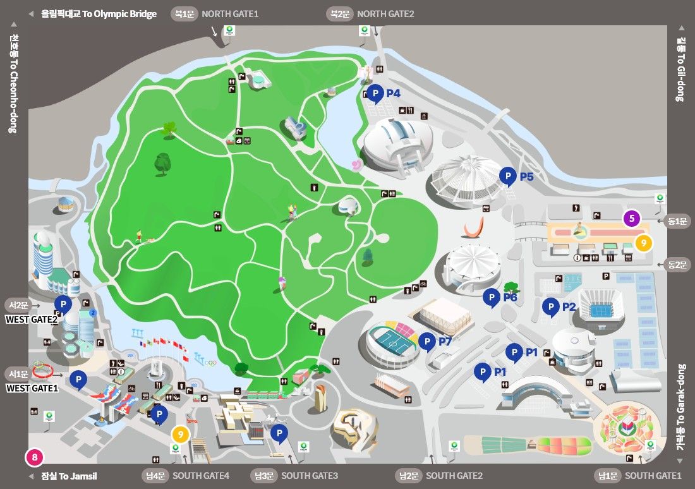
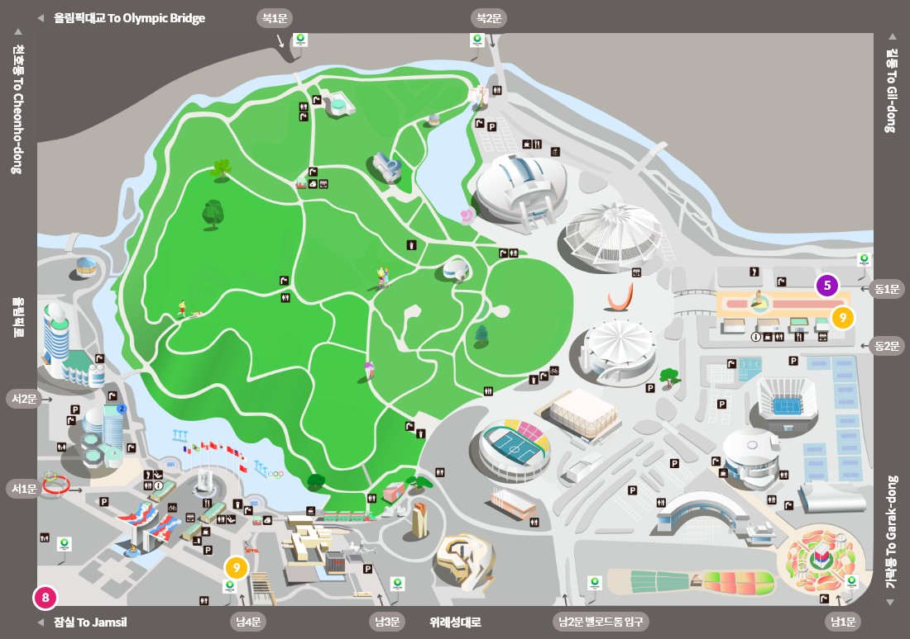

교통 및 주차안내

공원 주차요금 안내
| 구분 | 요금 | 할인 |
|---|---|---|
| 소형 | 10분당 600원 |
|
| 대형(24인승, 2.5톤이상) | 12,000원 |
- 공원 내 대형행사가 개최될 경우 선불제로 전환 및 주차장 운영시간 탄력적으로 운영
- 선불제 전환 일정 올팍소식 게시판에 공지
- 선불제 전환 시 소형 5,000원 / 대형 12,000원 정액징수
선불제 전환전 입차차량은 시간제 요금인 후불제 적용
자가 차량 이용 시 주차문제로 인해 이용에 불편함이 발생하실 수 있습니다.
반드시 버스, 지하철 등 대중교통 이용해 주시기 바랍니다. - 출차 후 재입차 시 정상요금 징수
- 10분 이내 출차 시 무료
- 특별한 사유 없이 72시간 이상 차량을 방치할 경우 견인조치 될 수 있음
공원 월주차 안내
| 출입문 | 주차구역 | 금액 |
|---|---|---|
| 북2/동2/남2문 | P1A, P2 | 150,000원 |
| 남3문 | 소마미술관 지하주차장 | |
| 남4문 | 남4문 주차장 |
- 주5일(월~금) 이용 가능(주말 주차시 일반 이용요금 적용)
- 1톤 화물 및 12인승 이하 승합/승용차량만 등록 가능
- 경차, 장애인, 저공해, 국가유공자 50% 할인, 다자녀 우대카드 소지자 2자녀 25%, 3자녀 50% 할인
- 관련 서류를 주차관리 사무실로 제출시 할인 적용 가능(차량등록증, 가족관계증명서 및 다둥이카드, 등본 및 복지카드)
올림픽 수영장
| 가장 가까운 주차장 | P4 |
|---|---|
| 주차장과의 소요시간 | 1분 |
| 가능 주차대수 | 172대 |
| 입차시간 | 06:00~22:00 |
| 가장 가까운 입구 | 북2문/ 동2문/ 남2문 |
| 가장 가까운 지하철역 | 5, 9호선 올림픽공원역 |
KSPO DOME(올림픽체조경기장)
| 가장 가까운 주차장 | P5 |
|---|---|
| 주차장과의 소요시간 | 1분 |
| 가능 주차대수 | 181대 |
| 입차시간 | 06:00~22:00 |
| 가장 가까운 입구 | 북2문/ 동2문/ 남2문 |
| 가장 가까운 지하철역 | 5, 9호선 올림픽공원역 |
우리금융아트홀(올림픽역도경기장)
| 가장 가까운 주차장 | P7 |
|---|---|
| 주차장과의 소요시간 | 1~2분 |
| 가능 주차대수 | 99대 |
| 입차시간 | 06:00~22:00 |
| 가장 가까운 입구 | 남2문/ 동2문/ 북2문 |
| 가장 가까운 지하철역 | 5, 9호선 올림픽공원역 |
SK핸드볼경기장(올림픽펜싱경기장)
| 가장 가까운 주차장 | P6 |
|---|---|
| 주차장과의 소요시간 | 1~2분 |
| 가능 주차대수 | 203대 |
| 입차시간 | 06:00~22:00 |
| 가장 가까운 입구 | 동2문/ 북2문/ 남2문 |
| 가장 가까운 지하철역 | 5, 9호선 올림픽공원역 |
올림픽홀
| 가장 가까운 주차장 | P2, 올림픽홀 지하주차장 |
|---|---|
| 주차장과의 소요시간 | 1~2분 |
| 가능 주차대수 | 336대 |
| 입차시간 | 06:00~22:00 |
| 가장 가까운 입구 | 동2문/ 남2문/ 북2문 |
| 가장 가까운 지하철역 | 5, 9호선 올림픽공원역 |
K-아트홀(태권도공연장)
| 가장 가까운 주차장 | P1 |
|---|---|
| 주차장과의 소요시간 | 3~4분 |
| 가능 주차대수 | 614대 |
| 입차시간 | 06:00~22:00 |
| 가장 가까운 입구 | 남2문/ 동2문/ 북2문 |
| 가장 가까운 지하철역 | 5, 9호선 올림픽공원역 |

지하철이용
- 8지하철 8호선 - 몽촌토성역 1번 출구5
- 5지하철 5호선 - 올림픽공원역 3번 출구9
- 9지하철 9호선 - 올림픽공원역 3번 출구, 한성백제역 2번 출구
버스이용
| 공원출입구 | 버스번호 | 종점 | 경유지 | 비고 |
|---|---|---|---|---|
| 동2문 지하철 5, 9호선 올림픽공원역 |
3214 | 마천동 ↔ 강변역 | 방이역, 올림픽공원역, 둔촌동역, 천호역 | 서울버스 |
| 3220 | 오금동 ↔ 청량리 | 방이역, 올림픽공원역, 건대앞, 장한평역, 청량리 | 서울버스 | |
| 3319 | 장지공영차고지 ↔ 잠실역 | 방이역, 올림픽공원역, 몽촌토성역, 잠실역 | 서울버스 | |
| 3412 | 강동공영차고지 ↔ 우면동 | 상일동역, 둔촌동역, 올림픽공원역, 강남역 | 서울버스 | |
| 3413 | 강동공영차고지 ↔ 수서경찰서 | 상일동역, 길동역, 올림픽공원역, 가락시장역 | 서울버스 | |
| 30-5 | 하남공영차고지 ↔ 잠실역 | 하남시청, 올림픽공원역, 몽촌토성역, 잠실역 | 경기버스 | |
| 6300 | 고덕동 ↔ 인천공항 | 인천공항, 잠실역, 방이역, 올림픽선수촌아파트 | 공항버스 | |
| 남2문 밸로드롬 입구 |
3216 | 오금동 ↔ 청량리 | 방이동, 올림픽공원 남2문, 건대앞, 청량리 | 서울버스 |
| 3412 | 강동공영차고지 ↔ 우면동 | 상일동역, 둔촌동역, 올림픽공원 남2문, 강남역 | 서울버스 | |
| 3413 | 강동공영차고지 ↔ 수서경찰서 | 상일동역, 올림픽공원 남2문, 석촌역, 가락시장역 | 경기버스 | |
| 3414 | 오금동 ↔ 고속터미널 | 남한산성입구, 올림픽공원 남2문, 고속터미널 | 서울버스 | |
| 30 | 하남종합운동장 ↔ 남한산성입구 | 하남, 천호역, 올림픽공원 남2문, 송파역, 남한산성 | 경기버스 | |
| 30-5 | 하남공영차고지 ↔ 잠실역 | 하남시청, 올림픽공원 남2문, 몽촌토성역, 잠실역 | 경기버스 | |
| 남4문 (올림픽공원 평화의문광장) 지하철 8호선 몽촌토성역 지하철 9호선 한성백제역 |
3412 | 강동공영차고지 ↔ 우면동 | 상일동역, 올림픽공원세계평화의문광장, 강남역 | 서울버스 |
| 3413 | 강동공영차고지 ↔ 수서경찰서 | 상일동역, 올림픽공원세계평화의문광장, 가락시장역 | 서울버스 | |
| 340 | 강동공영차고지 ↔ 강남역 | 상일동역, 천호역, 올림픽공원세계평화의문광장, 강남역 | 서울버스 | |
| 30-5 | 하남공영차고지 ↔ 잠실역 | 하남, 올림픽공원세계평화의문광장, 몽촌토성역, 잠실역 | 경기버스 | |
| 30 | 하남종합운동장 ↔ 남한산성입구 | 하남, 올림픽회관, 올림픽공원세계평화의문광장, 남한산성 | 경기버스 | |
| 올림픽회관 | 3318 | 강동공영차고지 ↔ 마천동 | 상일동역, 천호역, 올림힉회관, 잠실역, 남한산성 | 서울버스 |
| 3319 | 장지공영차고지 ↔ 잠실역 | 방이역, 올림픽회관, 몽촌토성역, 잠실역 | 서울버스 | |
| 3411 | 강동공영차고지 ↔ 삼성역 | 상일동역, 천호역, 몽촌토성역, 삼성역 | 서울버스 | |
| 4318 | 사당동 ↔ 풍납동 | 사당동, 고속버스터미널, 올림픽회관, 풍납동 | 서울버스 | |
| 16 | 하남 ↔ 삼성의료원 | 하남, 천호역, 올림픽회관, 가락시장, 삼성서울병원 | 경기버스 | |
| 30 | 하남종합운동장 ↔ 남한산성입구 | 하남, 올림픽회관, 올림픽공원남4문, 남한산성 | 경기버스 | |
| 30-1 | 상산곡동 ↔ 남한산성입구 | 하남, 천호역, 올림픽회관, 몽촌토성역, 남한산성 | 경기버스 | |
| 30-3 | 하남공영차고지 ↔ 잠실역 | 하남, 천호역, 올림픽회관, 잠실역 | 경기버스 | |
| 70 | 사기막골 ↔ 중랑공영차고지 | 남한산성, 올림픽회관, 천호역, 신내동 | 경기버스 | |
340 |
강동공영차고지 ↔ 강남역 | 상일동역, 천호역, 올림픽회관, 강남역 | 서울버스 | |
341 |
하남공영차고지 ↔ 강남역 | 하남, 천호역, 몽촌토성역, 역삼역, 올림픽회관 | 서울버스 | |
| 342 | 강동공영차고지 ↔ 고속터미널 | 상일동역, 천호역, 올림픽회관, 고속터미널 | 서울버스 | |
| 6006 | 몽촌토성역 ↔ 인천공항 | 몽촌토성역, 잠실역, 잠실종합운동장, 인천공항 | 공항버스 | |
| 6006-1 | 몽촌토성역 ↔ 인천공항 | 몽촌토성역, 잠실역, 잠실종합운동장, 인천공항 | 공항버스 |
승용차이용
- 천호동/길동 방면 : 천호대로(길동역 방향 진행) → 길동사거리(둔촌동 방면으로 우회전) → 올림픽공원 동문(우회전)
- 올림픽대교 방면 : 광나룻길 → 올림픽대교 → 둔촌사거리(우회전) → 올림픽공원 동문(우회전)
- 잠실/롯데월드 방면 : 올림픽로(잠실역) → 몽촌토성역 (우회전) → 올림픽공원역 방면 (좌회전) → 올림픽공원 동문(좌회전)
- 가락시장 방면 : 송파대로(가락시장역) → 가락시장(방이역 방면으로 우회전) → 올림픽공원 동문(좌회전)
- 서하남 IC 방면 : 서하남IC → 둔촌사거리 (수서 IC방면으로 좌회전) → 올림픽공원 동문(우회전)
고속도로이용
경부고속도로로 오시는 경우
경부고속도로→ 판교분기점에서 수도권제1순환고속도로 하남, 구리방향 → 수도권제1순환고속도로 서하남IC 진출 → 올림픽공원
중부고속도로로 오시는 경우
중부고속도로→ 하남분기점에서 수도권제1순환고속도로 판교, 서하남 방향 → 수도권제1순환고속도로 서하남IC 진출 → 올림픽공원
서해안고속도로로 오시는 경우
서해안고속도로→ 조남분기점에서 수도권제1순환고속도로 판교, 구리방향 → 수도권제1순환고속도로 서하남IC 진출 → 올림픽공원
영동고속도로로 오시는 경우
영동고속도로→ 호법분기점에서 중부고속도로 동서울방향 → 하남분기점에서 수도권제1순환고속도로 판교, 서하남방향 → 수도권제1순환고속도로 서하남IC 진출 → 올림픽공원
서울양양고속도로로 오시는 경우
서울양양고속도로→ 미사IC에서 올림픽대로 김포공항방면 – 천호대교 남단으로 진출 → 올림픽공원
항공편으로 오시는 경우
공항 리무진 버스로 이동하는 경우
- 승차(인천공항에서 6006번 리무진 버스)
하차(올림픽파크텔) - 승차(인천공항에서 6300번 리무진 버스)
하차(올림픽선수촌아파트)
공항 리무진 버스와 열차로 이동하는 경우
- 승차(인천공항에서 김포공항 경유 리무진 버스)
- 열차환승(김포공항에서 지하철 9호선 열차 중앙보훈병원 방향)
- 올림픽공원역으로 가실 경우 : 하차(올림픽공원역)
- 한성백제역으로 가실 경우 : 하차(한성백제역)
- 몽촌토성역으로 가실 경우 : 환승(석촌역에서 8호선 열차 잠실 방향) - 하차(몽촌토성역)
기차로 오시는 경우
서울역에서 지하철로 이동하는 경우
- 승차(서울역에서 4호선 열차 당고개 방향)
- 열차환승(동대문역사문화공원역에서 5호선 열차 마천방향)
- 올림픽공원역으로 가실 경우 : 하차(올림픽공원역)
- 몽촌토성역으로 가실 경우 : 열차환승(천호역에서 8호선 열차 잠실 방향) - 하차(몽촌토성역)
서울역에서 지하철과 버스로 이동하는 경우
- 승차(서울역에서 4호선 열차 당고개 방향)
- 열차환승(동대문역사문화공원역에서 2호선 열차 왕십리/잠실 방향)
- 버스환승(잠실역) : 버스노선도를 참조하여 환승하고 원하는 정류장에 하차
- 버스환승(잠실나루역) : 버스노선도를 참조하여 환승하고 원하는 정류장에 하차
용산역에서 지하철로 이동하는 경우
- 승차(용산역에서 1호선 열차 노량진 방향)
- 열차환승(노량진역에서 9호선 열차 중앙보훈병원 방향)
- 올림픽공원역으로 가실 경우 : 하차(올림픽공원역)
- 한성백제역으로 가실 경우 : 하차(한성백제역)
- 몽촌토성역으로 가실 경우 : 열차환승(석촌역에서 8호선 열차 잠실 방향) - 하차(몽촌토성역)
용산역에서 지하철과 버스로 이동하는 경우
- 승차(용산역에서 경의·중앙선 열차 왕십리 방향)
- 열차환승(왕십리역에서 2호선 열차 왕십리/잠실 방향)
- 버스환승(잠실역) : 버스노선도를 참조하여 환승하고 원하는 정류장에 하차
- 버스환승(잠실나루역) : 버스노선도를 참조하여 환승하고 원하는 정류장에 하차
수서역에서 지하철로 이동하는 경우
- 승차(수서역에서 3호선 열차 오금 방향)
- 열차환승
- 올림픽공원역으로 가실 경우 : 열차환승(오금역에서 5호선 열차 방화 방향) - 하차(올림픽공원역)
- 몽촌토성역으로 가실 경우 : 열차환승(가락시장역에서 8호선 열차 잠실 방향) - 하차(몽촌토성역)
영등포역에서 지하철으로 이동하는 경우
- 승차(영등포역에서 1호선 열차 노량진 방향)
- 열차환승(노량진역에서 9호선 열차 중앙보훈병원 방향)
- 올림픽공원역으로 가실 경우 : 하차(올림픽공원역)
- 한성백제역으로 가실 경우 : 하차(한성백제역)
- 몽촌토성역으로 가실 경우 : 열차환승(석촌역에서 8호선 열차 잠실 방향) - 하차(몽촌토성역)
고속버스로 오시는 경우
고속터미널에서 지하철로 이동하는 경우
- 승차(고속터미널역 9호선 열차 중앙보훈병원 방향)
- 올림픽공원역으로 가실 경우 : 하차(올림픽공원역)
- 한성백제역으로 가실 경우 : 하차(한성백제역)
- 몽촌토성역으로 가실 경우 : 열차환승(석촌역에서 8호선 열차 잠실 방향) - 하차(몽촌토성역)
동서울터미널
- 승차(지하철 2호선 잠실/강남 방향)
- 버스로 환승하는 경우
- 성내역이나 잠실역에서 버스노선도를 참조하여 환승하고 원하는 정류장에 하차
- 열차로 이동하시는 경우
- 몽촌토성역으로 가실 경우 : 열차환승(잠실역에서 8호선 열차 암사방향) - 하차(몽촌토성역)
- 한성백제역으로 가실 경우 : 열차환승(종합운동장역에서 9호선 열차 중앙보훈병원 방향) - 하차(한성백제역)
- 올림핑공원역으로 가실 경우 : 열차환승(종합운동장역에서 9호선 열차 중앙보훈병원 방향) - 하차(올림픽공원역)
찾아오시는 분의 정확한 위치에 따라서 최단/최적의 경로를 찾으시려면 서울지역 버스노선도 및 지하철 노선도를 참조하시기 바랍니다.